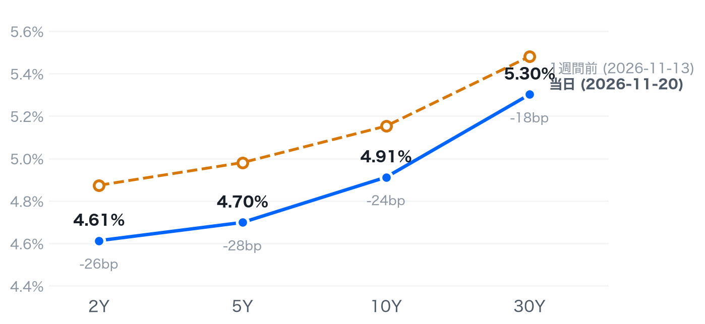

エヌビディアの決算もアンソロピックの上場も通過した後に、AIハードウェア売りはむしろ強まり、S&P 500は3.70%下落した。テクノロジー一業種で指数下落の約3分の2を占めた。
2年債利回りが16.6bp低下するなど国債が大きく買われた日であり、今回の下落は金利要因ではなく、市場がAI企業価値と投資規模を改めて問い直した結果とみる。11月25日のPCE物価前後の2年債利回りは、この判断を価格で検証する場となる。安全資産買いと利上げ経路の縮小を分ける1月・3月の政策金利期待のデータは、まだ確認できていない。
11月20日の米国市場では、AIハードウェア売りがエヌビディアの決算とアンソロピックの上場を通過した後も止まらず、拡大した。エヌビディアは14.01%急落し、AMD、ブロードコム、マイクロンも二桁下落となった。S&P 500は3.70%下落して7営業日続落となり、史上最高値から10%超下げて調整局面に入ったとの報道が出た。上場二日目のアンソロピック株も大きく下落した。
われわれはこの下落を、金利要因ではなく、市場がAI企業価値と投資規模を改めて問い直した結果とみる。2年債利回りが16.6bp低下するなど国債が大きく買われた日に、テクノロジー業種は市場の二倍近く下落しており、割引率の上昇でグロース株が売られたという説明は当日には当てはまらない。二つの材料を通過すればリスク縮小が巻き戻されるという期待も、この日の価格では確認されなかった。キウム証券のハン・ジヨン研究員は、エヌビディアの市場予想を上回る決算やアンソロピックIPOの好調といった好材料が出ても株価が下げ続け、市場参加者の買い意欲が削がれたことが最大の原因だと指摘した。最も強い反論はテクニカルな売りだ。アンソロピックの上場に伴う株式供給と月次オプション満期が重なって需給で売られたのであれば、来週初めに反動が出るはずだ。これを見分ける需給・オプションポジションのデータはなく、市場がAIハードウェアの利益見通しに何を織り込んでいたかも測定値を得られなかったため、市場の期待とわれわれの解釈の差は不明だ。
半導体・AIハードウェア業種の相対リターンは今週大きく悪化した。テクノロジー業種は一週間で12.49%下落しており、金利が低下してもこの業種が戻らなかった以上、金利の安定だけで反発を期待するのは難しい。この一日で新たなアイデアは出さない。反動が出るかを確認する時間軸は、11月23日と24日の終値だ。ディフェンシブ業種も絶対リターンを守れなかった。上昇したのは生活必需品の一業種だけで、ヘルスケア、エネルギー、公益事業は下落幅が小さかったにすぎない。ウォン建て現金と短期債では、米2年債利回りの低下を政策経路の変化と読むには早い。11月25日までの2年債利回りの動きは、この判断を価格で検証するものにすぎず、原因を切り分けるには1月・3月の政策金利期待のデータが併せて必要だ。借入・オプションのコストに関するデータがなく、どの手段で表現するかのコストは検討できない。
AI価値再評価の判断は、金利とテクノロジー株の組み合わせで再確認する。11月23〜24日に金利が上昇しない中で、XLKが11月20日終値比でS&P 500より3%ポイント以上戻した場合は、上場に伴う株式供給とオプション満期によるテクニカルな売りを優先的な説明とみて、解釈を修正する。2年債の判断は、11月20日のネイバー終値4.613%に対する11月25日終値の変化で測る。+10.84bp以上なら安全資産買いの判断を裏付け、-10.84bp以下なら判断は弱まり、12月以降の利上げ経路の縮小を優先的な説明とみる。その間であれば判断を保留し、方向が合っていても同期間のS&P 500の累積騰落率が0%未満であれば、原因は判断しない。この変化は判断を価格で検証する基準であり、原因を確定するには1月・3月の政策金利期待を併せて見る必要がある。
出所: Reuters, UPI, France 24, Motley Fool
| 指数 | 終値 | 騰落 | 基準日 |
|---|---|---|---|
| 日経225 | 56,436.65 | -5.06% | 11月20日 |
| ハンセン | 22,410.80 | -1.89% | 11月20日 |
| 上海総合 | 3,533.79 | -1.23% | 11月20日 |
| DAX | 24,802.78 | -2.60% | 11月20日 |
| FTSE100 | 10,346.34 | -1.02% | 11月20日 |
| ユーロ・ストックス50 | 5,941.95 | -2.81% | 11月20日 |
| VIX | 35.89 | +7.45p | 11月20日 |
六指数とVIXはいずれも11月20日の値。VIXの騰落はポイント。
アジアと欧州は前日の米国のAI株売りを引き継いで大きく下落し、米国もその流れを受けた。日経平均が5.06%急落するなど、アジア三指数は平均2.73%、欧州三指数は平均2.14%下落した。韓国と日本の指数が一日で5%超下落したとの報道が出た。
夜間のS&P先物(ES)は前日16:00(ET)の7,201で高値を付けた後、08:30(ET)に7,105まで下げ、ナスダック100先物(NQ)も同時刻に26,000で安値を付けた。現物はS&P 500が0.35%、ナスダックが1.22%、ラッセル2000が0.53%安で寄り付いた。08:30の安値に対応する材料は見当たらなかった。
S&P 500の構成銘柄に同じ比重を適用すると、指数の下落幅はより小さかった。均等加重指数のリターンが時価総額加重指数を1.66%ポイント上回ったということだ。これは、時価総額の大きい銘柄の下落が指数の下落に相対的に大きく効いた可能性を示唆する。三指数とも安値圏で終えた。
安値圏・高値圏の境界は、S&P 500、ナスダック、ラッセル2000の3指数の日次観測値2,259個で再計算した基準である。終値がその日の高値と安値の間のどこで終わったかを毎日測って集め、その観測値を低い順に並べたときの下から4分の1の地点と上から4分の1の地点を境界とする。終値位置が上側の境界以上なら高値圏、下側の境界以下なら安値圏での引けとなる。
AIハードウェア売りが株式を押し下げ、そのリスク回避が国債買いに波及した日だ。金利が大きく低下したのにテクノロジー株がさらに下げており、金利が株価を押し下げた日とは方向が逆だった。金は株式と共に下落し、ドル指数はほとんど動かなかった。引け前後に、トランプ大統領がジェンセン・フアン前エヌビディアCEOの復帰を望むと改めて述べ、ベッセント財務長官はH200の対中販売政策に変更はないと述べたとの報道が出たが、時間外の価格データがなく、その反応は測れない。
出所: ABC News/AP, CNBC
| 指数 | 終値 | 騰落率 |
|---|---|---|
| S&P500バリュー | 227.74 | -1.73% |
| ダウ・ジョーンズ | 48,147.33 | -1.93% |
| ラッセル2000 | 2,581.79 | -2.76% |
| S&P500 | 6,910.39 | -3.70% |
| ナスダック | 22,617.73 | -5.28% |
| S&P500グロース | 118.28 | -5.39% |
| セクター | 騰落率 |
|---|---|
| 生活必需品 | +0.67% |
| ヘルスケア | -0.12% |
| エネルギー | -0.62% |
| 公益事業 | -0.74% |
| 不動産 | -0.98% |
| 金融 | -1.82% |
| 素材 | -2.19% |
| コミュニケーション・サービス | -2.66% |
| 一般消費財 | -2.95% |
| 資本財・サービス | -3.09% |
| 情報技術 | -7.27% |
AIハードウェアの急落が指数を押し下げた。S&P 500は3.70%安の6,910.39、ナスダックは5.28%安の22,617.73で終え、両指数とも通常の一日の値動きの3.7〜3.8倍動いた。ダウは1.93%、ラッセル2000は2.76%下落し、下落幅は小さかった。一週間でS&P 500は8.61%、ナスダックは10.02%下落し、ナスダックは年初来でマイナスに転じたとの報道が出た。
場中は、午前の反発がむしろ売りの起点となった。S&P 500は10時ごろに7,199まで上昇して前日終値を一時上回った後、休みなく下げ、取引終盤の30分に6,883近辺で安値を付けた。エヌビディアは寄り付き直後の高値から引け間際まで12%超下げた。10時にはミシガン大学の11月確報値が予定されていたが、その値は確認できず、高値後の下落を特定のニュースと結びつける報道も見当たらなかった。
下落の主因は、金利よりもAI企業の価値を疑う見方だ。AI企業の価値と投資規模は正当化しにくいとの懸念が、エヌビディアの決算やアンソロピックの上場後も収まらなかったとの報道が出た。アンソロピックは上場二日目に8.5%安の88.91ドルで引け、公募価格83ドルに迫った。オーバーアロットメント・オプションがすべて行使され、株価を支える手段がなくなったとの2次引用の報道もあった。中間選挙でデータセンター建設の減速を公約した候補が当選したことがバブル懸念を強めたとの報道もあったが、この材料は11月5日の急落時に初めて出たものだ。VIXは、直近2年(504営業日)のうちこれより高かった日が5日しかない水準まで上昇した。
指数の下落の大部分は、テクノロジー一業種によるものだった。推定寄与度ではテクノロジーが-2.44%ポイントと、指数下落3.70%のうち約3分の2を占め、一般消費財が-0.39%ポイント、コミュニケーション・サービスが-0.34%ポイント、金融と資本財・サービスが各-0.19%ポイントで続いた。上昇したのは生活必需品の一業種だけで、その推定寄与度は+0.02%ポイントにとどまった。説明できない部分は-0.11%ポイントだ。
推定寄与度は業種ウエートを直接取得せず、直近252営業日の指数・業種リターンから推定したウエートを掛けた値である。素材と不動産はウエートを推定できないため除いた。
この下落の性格は、株式と金利の関係にも表れている。直近60営業日は、株式と金利が緩やかながら同じ方向に動き始め、その前の60営業日は逆に動いていた。データが示すのは、関係の符号が変わったという事実までだ。成長期待とリスク選好が二つの資産を連動させるようになったとみることもできるが、このデータだけではその原因は確認できない。この関係が続けば、金利低下は株式の緩衝材にならない。グロース株が5.39%下落する間にバリュー株は1.73%の下落にとどまり、売りは市場全体よりもグロースの大型株に集中した。
株式と金利の直近60営業日の相関係数は+0.21、その前の60営業日は-0.34だ。
出所: Reuters, UPI, France 24, Motley Fool, ABC News/AP
| 年限 | 終値 | 前日比(bp) | 1週間前 | 週間変化(bp) |
|---|---|---|---|---|
| 2Y | 4.613% | -16.6 | 4.874% | -26.1 |
| 5Y | 4.699% | -16.7 | 4.981% | -28.2 |
| 10Y | 4.912% | -14.0 | 5.153% | -24.1 |
| 30Y | 5.302% | -9.9 | 5.481% | -17.9 |
株式の急落を受けて国債は全年限で買われ、短期ゾーンの低下幅が大きかった。2年債利回りは16.6bp低下の4.613%、10年債利回りは14.0bp低下の4.912%で終え、10年債の一日の動きは通常の2.6倍だった。それでも10年債利回りは、直近2年(504営業日)のうちこれより高い日が46日しかない高水準にとどまっている。

カーブチャートの「今日」は11月20日終値、「1週間前」は11月13日終値だ。1週間前に比べ、2年債利回りは26.1bp、10年債利回りは24.1bp、30年債利回りは17.9bp低い。
一日では2年債が10年債より2.6bp大きく低下したブルスティープ化だ。2s10sは29.9bp(前日27.3bp)、5s30sは60.3bp(前日53.5bp)へ拡大した。1週間前と比べても5年債と2年債の低下幅が最も大きく、30年債が最も小さく、カーブは一週間前よりブルスティープ化した形で引けた。
金利低下は、タカ派的なFRB高官発言より安全資産需要の方が大きかった結果とみる。ウォラー理事はCNBCのインタビューで、米国人が3%の物価を正常と受け止め始めたとして、12月8~9日の会合で0.5%ptの利上げを含め、より積極的に引き上げるべきだと主張した。政策シグナルだけを見れば短期金利は上昇するはずだが、5年債利回りが16.7bp、2年債利回りが16.6bp低下し、二つの年限の低下幅が最大だった。リスク回避姿勢が強まりエヌビディアなど半導体株が売られて金利が低下したとの報道も同じ方向だ。株式の調整が金融環境を引き締め、市場が12月以降の利上げ織り込みを縮小した可能性もある。11月20日のCME FedWatch確率は入手できず、二つの説明はこの日については区別しにくい。
名目金利を実質金利と期待インフレ率に分解した最新データは11月19日のものだ。その日の10年債利回り3bp低下は、実質金利0bp、期待インフレ率-3bpに分かれ、期待インフレ率が主導した。11月20日分は期待インフレ率のみ公表され、5年期待インフレ率が4bp、10年が1bpの低下にとどまった。この日の名目金利低下の大部分は実質金利側から生じた可能性が高く、11月20日の実質金利が更新されればその寄与が確認できる。ここでの期待インフレ率は名目から実質を引いた値であり、リスク・流動性プレミアムも含まれる。
5年先5年物の名目金利は5.22%、実質は3.12%だ(11月19日時点)。期待インフレ率側の数値とのクロスチェックはできず、リスクプレミアムが混じった値である。
出所: Fortune, Schwab
| 通貨ペア | 終値 | 騰落率 | 基準日 |
|---|---|---|---|
| DXY | 103.859 | -0.03% | 11月20日 |
| USD/KRW | 1,346.42 | +0.96% | 11月20日 |
| USD/JPY | 158.495 | -0.73% | 11月20日 |
| EUR/USD | 1.0969 | -0.10% | 11月20日 |
リスク回避が強まった日にも、ドルは安全資産の役割を果たさなかった。ドル指数は0.03%低下の103.859とほぼ動かず、円は上昇しウォンは下落した。ドル/円は0.73%低下の158.495、ドル/ウォンは0.96%上昇の1,346.42だ。
ドルが横ばいにとどまったのは二つの力が拮抗したためとみる。米金利が短期ゾーン中心に大きく低下し金利差はドルに不利になったが、株価急落に伴うリスク回避はドルを支えた。円はその間で金利差要因の影響をより大きく受けた。FxProは日米金利差の縮小とポジション解消を円高の理由に挙げ、日本の10月消費者物価が2.3%と2025年11月以来の高さとなり、日銀の12月利上げ観測が強まったとみた。ドル/円は取引時間中ずっと下押しされ、15時ごろ安値圏で終えた。
ウォン安は韓国株が急落した日に起きた。ドル/ウォンは通常の一日の値幅の1.5倍動き、韓国の終値ベースでサムスン電子は7.01%、SKハイニックスは5.92%下落した。外国人の資金フローのデータがなく、ウォン安が株式売却代金の換金によるものか、アジア全般のリスク回避によるものかは判別できない。水準としては依然、直近2年(504営業日)のうちこれより低い日が38日しかないウォン高局面にある。
為替はニューヨーク16:00 ET時点の価格で、前営業日の同時刻比だ。決済価格とは異なる場合がある。
出所: Investing.com
| 品目 | 終値 | 騰落率 |
|---|---|---|
| WTI | $83.97 | +1.07% |
| Brent | $90.20 | +0.22% |
| 天然ガス | $3.770 | +2.86% |
| 金 | $3,526.00 | -3.70% |
金が株式とともに再び急落した。金は3.70%安の3,526.00ドルで通常の一日の値幅の2.7倍動き、この日動いた商品の中で最大だった。原油は逆にやや上昇した。WTIは1.07%高の83.97ドルと動きは小さく、ブレントは0.22%高の90.20ドルだ。
金の急落は金利が大きく低下した日に起きており、保有コストでは説明できない。10年実質金利は最新値の11月19日に変化がなく、この日は名目金利が大きく低下した。金はアジア時間の3,596.7ドルの高値から米国時間午後の3,502.9ドルの安値まで下落し、その下落は株式の売りが深まった時間帯と重なる。株価急落の中で現金を確保するための売りが金に波及したという説明は成り立つが、確認できるポジションデータがなく、可能性にとどめる。
ブレントはWTIより6.23ドル高い。WTIはアジア時間の80.78ドルの安値から引け間際の84.07ドルの高値まで上昇し、高値圏で終えたが、原油を押し上げた材料は確認されていない。天然ガスは2.86%上昇した。
商品・為替はニューヨーク16:00 ET時点の価格で、前営業日の同時刻比だ。決済価格とは異なる場合がある。金の一日の動きは直近60営業日の平均変動幅の2.68倍だ。
半導体・AIハードウェア業種の下落を拡大させた銘柄だ。エヌビディアが14.01%下落し、マイクロン(-13.89%)、AMD(-13.25%)、ブロードコム(-12.19%)、モノリシック・パワー・システムズ(-11.87%)、マーベル(-11.69%)が続いた。アナログ・デバイセズ(-8.35%)、インテル(-7.97%)、テキサス・インスツルメンツ(-7.70%)、クアルコム(-7.45%)、NXPセミコンダクターズ(-6.60%)も売られ、売りは半導体業種全体に広がった。AI企業の価値と投資規模を巡る懸念が続き、半導体が下落を主導したとの報道があった。CNBCは、米証券取引委員会(SEC)がエヌビディアの会計問題を調べているとの報道も売りを強めたと報じた。 このほかの個別材料は確認されていない。
ウォルマートは1.52%上昇し、生活必需品が唯一上昇した業種となる一因となった。この日の固有材料は確認されておらず、直近の材料は11月19日の決算発表で、今年三回目となる売上高見通しの引き上げと高所得層の顧客増加を明らかにしたことだ。ディフェンシブ・スタイルの相対的な強さを支えた銘柄だ。
ユナイテッドヘルスは2.84%上昇し、指数を支えた数少ない大型株だった。確認された材料はない。
テスラは7.64%下落した。確認された材料はない。
メタは5.93%下落した。確認された材料はない。
出所: Reuters, Motley Fool, ABC News/AP, NBC News
ミシガン大消費者心理の10月確定値が新たに反映されたが、米景気局面は成長横ばい・物価再加速のコストプレッシャーを9日連続で維持している。成長スコア0.073は横ばいの範囲内で、利用可能な指標ベースの物価スコア0.722は再加速を示しており、局面は変わらない。局面を再び動かす材料は11月25日のPCE物価とGDPだ。
雇用軸は改善で、新たな発表はない。非農業部門雇用者数の3カ月平均が+28Kから+137Kへ上昇したことが判定を支える。雇用軸 +0.451
| 指標 | Actual | Forecast | Previous | 発表日 | 予想比 | 前回比 | トレンド |
|---|---|---|---|---|---|---|---|
| 求人件数(9月) | 7,523K | — | 7,190K | 2026-09基準月 | 改善 | 横ばい · 3カ月平均 7,435K → 7,349K | |
| 新規失業保険申請件数 | 203,000 | — | 202,000 | 2026-11-19 (11月14日の週) | 悪化 | 横ばい · 4週平均 198K → 198K | |
| 新規申請件数4週平均 | 197,750 | — | 195,750 | 2026-11-19 (11月14日の週) | 悪化 | 改善(小幅) · 4週平均 199K → 196K | |
| 失業保険継続受給者数 | 1,763,000 | — | 1,693,000 | 2026-11-19 (11月7日の週) | 悪化 | 悪化(小幅) · 4週平均 1,710K → 1,717K | |
| 非農業部門雇用者数変化(10月) | +165K | — | +60K | 2026-11-06 | 改善 | 改善(顕著) · 3カ月平均 +28K → +137K | |
| 失業率(10月) | 4.1% | — | 4.2% | 2026-11-06 | 改善 | 改善(小幅) · 3カ月平均 4.20% → 4.13% | |
| 平均時給 MoM(10月) | +0.37% | — | +0.26% | 2026-11-06 | 改善 | 改善(顕著) · 3カ月平均 +0.20% → +0.32% |
生産・活動軸は悪化で、新たな発表はない。中古住宅販売の顕著な減少と貿易赤字の拡大が判定を支える。生産・活動軸 -0.652
| 指標 | Actual | Forecast | Previous | 発表日 | 予想比 | 前回比 | トレンド |
|---|---|---|---|---|---|---|---|
| フィラデルフィア連銀製造業景気指数(11月) | 6.3 | — | 20.9 | 2026-11-19 | 悪化 | 悪化(顕著) · 3カ月平均 33.0 → 21.7 | |
| 住宅着工件数(10月) | 1,309K | — | 1,191K | 2026-11-18 | 改善 | 悪化(緩やか) · 3カ月平均 1,330K → 1,260K | |
| 鉱工業生産 MoM(10月) | -0.43% | — | +0.73% | 2026-11-17 | 悪化 | 悪化(小幅) · 3カ月平均 +0.19% → +0.07% | |
| 耐久財受注 MoM(9月) | +1.91% | — | +0.14% | 2026-09基準月 | 改善 | 悪化(小幅) · 3カ月平均 +1.70% → +0.98% | |
| 製造業受注 MoM(9月) | +1.84% | — | +0.33% | 2026-09基準月 | 改善 | 悪化(小幅) · 3カ月平均 +1.35% → +0.98% | |
| 建設支出 MoM(9月) | -1.85% | — | +1.98% | 2026-09基準月 | 悪化 | 改善(小幅) · 3カ月平均 -0.18% → -0.01% | |
| 新築住宅販売件数(9月) | 676K | — | 680K | 2026-09基準月 | 悪化 | 改善(小幅) · 3カ月平均 652K → 668K | |
| 中古住宅販売件数(10月) | 375万 | — | 397万 | 2026-11-12 | 悪化 | 悪化(顕著) · 3カ月平均 4,127K → 3,883K | |
| 貿易収支(9月) | -$105.05B | — | -$105.74B | 2026-09基準月 | 改善 | 悪化(顕著) · 3カ月平均 -66.6 → -101.2 | |
| 実質GDP QoQ年率(第3四半期) | +3.4% | — | +2.2% | 2026年第3四半期 | 改善 | — |
消費軸は改善を維持したが、根拠は薄くなった。ミシガン大消費者心理の10月確定値が48.0と9月(48.1)とほぼ同じで、トレンドが横ばいに変わり、改善側には小売売上高一つが残った。消費軸 +0.42
| 指標 | Actual | Forecast | Previous | 発表日 | 予想比 | 前回比 | トレンド |
|---|---|---|---|---|---|---|---|
| 小売売上高 MoM(10月) | +0.21% | — | +0.83% | 2026-11-17 | 悪化 | 改善(緩やか) · 3カ月平均 +0.28% → +0.83% | |
| ミシガン大学消費者信頼感指数(10月確報) | 48.0 | — | 48.1 | 2026-10基準月 | 悪化 | 横ばい · 3カ月平均 49.8 → 49.3 |
物価軸は再加速だ。物価軸は8指標中6指標で算出した。2025年10月CPIの比較基準値が公式に提供されないため、2026年10月の前年同月比指標2つを計算から除外した。再加速は利用可能な指標ベースのシグナルであり、欠測次第で物価判断が変わりうる。 ミシガン大1年期待インフレ率の10月確定値は9月の4.6%から4.7%に上昇したが、3カ月平均では膠着しており判定は変えなかった。物価軸 +0.722
| 指標 | Actual | Forecast | Previous | 発表日 | 予想比 | 前回比 | トレンド |
|---|---|---|---|---|---|---|---|
| PPI最終需要 MoM(10月) | +0.35% | — | +1.41% | 2026-11-13 | 下落 | 再加速(顕著) · 3カ月平均 +0.17% → +0.72% | |
| CPI MoM(10月) | +0.35% | — | +0.65% | 2026-11-10 | 下落 | 再加速(顕著) · 3カ月平均 +0.04% → +0.46% | |
| Core CPI MoM(10月) | +0.30% | — | +0.33% | 2026-11-10 | 下落 | 再加速(顕著) · 3カ月平均 +0.14% → +0.31% | |
| PCE物価 YoY(9月) | 3.65% | — | 3.44% | 2026-09基準月 | 上昇 | 膠着 · 3カ月平均 3.62% → 3.49% | |
| Core PCE YoY(9月) | 3.12% | — | 3.03% | 2026-09基準月 | 上昇 | 膠着 · 3カ月平均 3.10% → 3.05% | |
| ミシガン大学1年先期待インフレ率(10月確報) | 4.7% | — | 4.6% | 2026-10基準月 | 上昇 | 膠着 · 3カ月平均 4.53% → 4.43% |
ミシガン大消費者調査の10月確定値が新たに反映された。1年期待インフレ率は4.7%と9月の4.6%より高く、消費者心理は48.0と9月の48.1とほぼ同じだった。
この数値は10月23日にすでに発表された10月の値だ。11月6日に出た11月速報値は心理51.0、1年期待インフレ率4.3%と報じられ、その調査は11月2日に終わっており、11月5日以降のAI株急落を反映していない。
したがって今回の反映は物価・消費の判断を動かさない。1年期待インフレ率が10月の4.7%から11月速報値の4.3%へ下がった流れは、ウォラー理事が挙げた期待インフレ率の定着とは逆方向であり、11月確定値が速報値を確認すれば12月の50bp利上げの論拠を弱める。コストプレッシャー局面の判断は変わらず、その物価シグナルは利用可能な指標ベースだ。
直前比はActualをPreviousと比較したもので、トレンドは直近3カ月平均をその前の3カ月平均と比較したものである(週間失業保険申請は4週平均同士)。トレンドの強さは、その指標が普段動く幅に照らした大きさで、小さな変化は横ばいとみる。四半期指標であるGDPは二つの比較が同じ数値を示すため、直前比のみ掲載する。
FRBの次の一手は12月9日のFOMCでの25bp利上げという判断と時期を維持する。CME FedWatchでは12月の25bp利上げ確率が11月19日時点で約91%、50bpは約9%と報じられたが、11月20日の急落後の値は確認できていない。ウォラー理事は0.5%ポイントの利上げや、2025年の三回の利下げ分を超える利上げに言及したが、ウィリアムズNY連銀総裁は急激な措置は不要と述べており、50bpはまだ少数意見だ。
現在の政策金利は3.75~4.00%だ。2年債利回りの一日16.6bpの低下が12月以降の利上げ経路の縮小を意味するのかは、1・3月の政策金利期待のデータがなければ見極められない。11月25日のPCE物価の前後の2年債は、その判断を価格で検証する場であり、利用可能な指標ベースの物価再加速シグナルがその発表で確認されれば、50bpをめぐる議論が勢いを増す。
12月9日のFOMCまでにFRBの声明や議長発言が追加利上げの余地を閉ざせば、12月利上げを軸とする判断を撤回する。11月25日の10月PCE物価が予想を下回り、CME FedWatchの12月利上げ確率が消費者物価発表前の報道値(84%)を下回れば、12月利上げを軸とする判断を修正する。
資産別の方向とその根拠は前日と同じだ。債券の中立復帰条件である30年債利回り5.4%割れはこの日初めて現れ、5営業日とどまるかを見る。債券・為替の判断に入っている物価再加速シグナルは利用可能な指標ベースだ。
新たに反映されたミシガン大の数値はすでに公表済みの10月確定値であり、この日の価格に対して新たな情報とならなかった。同日10:00 ETに予定されていた11月確定値は値を確認できず、S&P 500の日中高値は10時ごろだったが、両者を結びつける報道は見つからなかった。この日の国債利回り低下と株の急落は同時に起きたが、発表の影響は実績値と予想値を確認できないため判断できない。
出所: Babypips, Fortune, stockanalysis.com
| 指数 | 順位(5営業日前) | 1カ月 | 3カ月 | SPY比3カ月 | 対SPY超過収益の変化 | 12-1モメンタム | ボラティリティ | 1日VaR 95% | ベータ | 50/200日線 | 52週高値比 |
|---|---|---|---|---|---|---|---|---|---|---|---|
| エネルギー XLE | 6(4) | -10.4% | -3.5% | +5.9%p | -0.7%p | +54.6% | 25.4% | 3.0% | 0.06 | 下/上 | -13.6% |
| 一般消費財 XLY | 7(6) | -2.2% | -4.7% | +4.7%p | -0.4%p | +3.3% | 21.9% | 1.8% | 0.99 | 下/下 | -9.1% |
| 金融 XLF | 8(7) | -3.7% | -5.9% | +3.5%p | -0.9%p | +11.6% | 17.4% | 1.8% | 0.62 | 下/上 | -7.8% |
| 住宅建設 XHB | 10(13) | -2.6% | -8.6% | +0.8%p | +3.8%p | +0.6% | 29.7% | 2.5% | 0.81 | 下/下 | -19.6% |
| 銀行 KBE | 11(14) | -5.3% | -8.9% | +0.6%p | +4.4%p | +19.9% | 17.8% | 1.7% | 0.49 | 下/下 | -12.5% |
| ソフトウェア IGV | 12(10) | -15.7% | -10.5% | -1.1%p | -2.5%p | +4.7% | 32.2% | 3.6% | 1.22 | 下/下 | -18.6% |
| 超大型株Top 50 XLG | 14(11) | -11.9% | -10.8% | -1.3%p | -0.8%p | +8.8% | 20.9% | 2.3% | 1.17 | 下/下 | -15.3% |
| 資本財・サービス XLI | 16(17) | -6.2% | -12.4% | -3.0%p | +4.1%p | +12.2% | 19.4% | 2.0% | 0.87 | 下/下 | -15.9% |
| 小型株 IWM | 17(16) | -7.2% | -13.7% | -4.2%p | +2.1%p | +19.7% | 19.6% | 1.9% | 0.96 | 下/下 | -15.7% |
| 防衛 ITA | 18(21) | -2.9% | -14.8% | -5.4%p | +7.0%p | +0.9% | 22.7% | 2.2% | 0.79 | 下/下 | -21.5% |
| 小型グロース IWO | 20(20) | -7.7% | -16.3% | -6.8%p | +2.1%p | +13.2% | 24.4% | 2.4% | 1.20 | 下/下 | -18.9% |
| 電力網 GRID | 21(22) | -10.9% | -18.2% | -8.8%p | +4.2%p | +10.2% | 31.2% | 4.3% | 1.34 | 下/下 | -26.8% |
| モメンタム・ファクター MTUM | 23(23) | -16.5% | -19.6% | -10.2%p | +3.1%p | +19.6% | 34.7% | 3.7% | 1.65 | 下/下 | -30.0% |
| 半導体・AIハードウェア SMH | 24(24) | -23.6% | -26.8% | -17.4%p | -1.5%p | +54.7% | 52.0% | 6.0% | 2.40 | 下/下 | -40.2% |
| 金属・鉱業 XME | 25(25) | -16.9% | -31.8% | -22.4%p | -4.0%p | +6.1% | 36.2% | 4.1% | 1.48 | 下/下 | -39.5% |
| 指数 | 順位(5営業日前) | 1カ月 | 3カ月 | SPY比3カ月 | 対SPY超過収益の変化 | 12-1モメンタム | ボラティリティ | 1日VaR 95% | ベータ | 50/200日線 | 52週高値比 |
|---|---|---|---|---|---|---|---|---|---|---|---|
| 生活必需品 XLP | 1(2) | +0.5% | +4.1% | +13.6%p | +1.6%p | +20.9% | 17.6% | 1.4% | 0.04 | 上/上 | -2.3% |
| ヘルスケア XLV | 2(1) | -2.2% | +1.8% | +11.3%p | -4.3%p | +21.0% | 18.5% | 2.1% | 0.42 | 上/上 | -6.5% |
| 低ボラティリティ SPLV | 3(5) | -0.2% | +0.4% | +9.8%p | +3.5%p | +9.0% | 12.4% | 1.0% | 0.22 | 上/上 | -3.2% |
| 公益事業 XLU | 4(8) | -0.4% | -0.5% | +8.9%p | +6.4%p | -0.3% | 15.5% | 1.4% | 0.23 | 上/下 | -8.7% |
| 配当 SCHD | 5(3) | -4.1% | -2.8% | +6.6%p | -1.7%p | +36.1% | 13.9% | 1.4% | 0.33 | 下/上 | -6.3% |
| クオリティ・ファクター QUAL | 9(9) | -7.6% | -7.1% | +2.3%p | +0.2%p | +18.2% | 14.9% | 1.6% | 0.81 | 下/下 | -8.9% |
| 指数 | 順位(5営業日前) | 1カ月 | 3カ月 | SPY比3カ月 | 対SPY超過収益の変化 | 12-1モメンタム | ボラティリティ | 1日VaR 95% | ベータ | 50/200日線 | 52週高値比 |
|---|---|---|---|---|---|---|---|---|---|---|---|
| 欧州 VGK | 13(12) | -4.8% | -10.6% | -1.1%p | -0.2%p | +13.3% | 16.4% | 1.5% | 0.68 | 下/下 | -11.1% |
| 日本 EWJ | 15(15) | -11.8% | -12.0% | -2.6%p | +1.8%p | +22.3% | 23.1% | 2.1% | 1.19 | 下/下 | -16.0% |
| 中国 MCHI | 19(19) | -6.1% | -16.2% | -6.8%p | +1.1%p | -19.3% | 18.3% | 1.9% | 0.37 | 下/下 | -27.9% |
| 新興国 EEM | 22(18) | -12.8% | -18.6% | -9.1%p | -1.8%p | +16.9% | 27.2% | 2.9% | 1.36 | 下/下 | -24.4% |
| 指数 | 順位(5営業日前) | 1カ月 | 3カ月 | SPY比3カ月 | 対SPY超過収益の変化 | 12-1モメンタム | ボラティリティ | 1日VaR 95% | ベータ | 50/200日線 | 52週高値比 |
|---|---|---|---|---|---|---|---|---|---|---|---|
| S&P 500 SPY | – | -9.7% | -9.4% | 0.0%p | – | +16.5% | 17.5% | 1.9% | 1.00 | 下/下 | -11.5% |
| S&P 500均等加重 RSP | – | -4.9% | -6.2% | +3.2%p | – | +20.2% | 14.2% | 1.5% | 0.66 | 下/下 | -7.1% |
| ナスダック100 QQQ | – | -13.6% | -13.8% | -4.3%p | – | +18.0% | 27.5% | 2.9% | 1.48 | 下/下 | -19.9% |
価格ベースの局面は11月16日から5営業日目の短期弱気だ。SPYは689.81で50日線(760.03)と200日線(730.29)の下にあり、52週高値比-11.46%である。200日線は20営業日前の724.00よりまだ高く、長期弱気の条件には当てはまらない。200日線が下向きになれば、長期弱気を検討することになる。
半導体・AIハードウェアのS&P 500対比3カ月超過収益は-17.41%ポイントと、5営業日前(-15.94%ポイント)から1.47%ポイント悪化し、25本中24位にとどまった。市場全体が大きく下げた週にもこの業種の相対リターンがさらに悪化しており、下落は業種固有の再評価だという判断を裏付ける。ディフェンシブ・スタイルは順位が上がった。公益事業は+8.92%ポイントと6.38%ポイント改善して8位から4位へ、生活必需品は+13.55%ポイントと1.65%ポイント改善して2位から1位へ上昇した。
流動性とリスクのシグナルは食い違っている。純流動性が4週間で増え、金融環境指数も平均より緩和的なため流動性の方向は緩和だが、VIXは過去2年の中でも高い水準にあり、ハイイールドスプレッドは11月19日までの5営業日で32bp拡大した。ディフェンシブ・スタイルを支えているのは流動性の引き締めではなく、株式市場内部のリスク回避とみる。
AI株急落日の2年債利回り低下を、株急落に伴う安全資産買いとみる判断(11月20日)を新たに立てる。起点は11月20日のネイバー終値の2年債利回り4.613%で、前日より16.6bp低下した。11月20日比で11月25日終値の変化が+10.84bp以上なら判断を裏付け、-10.84bp以下なら判断が弱まり、12月以降の利上げ経路の縮小を優先的な説明とみる。その間である場合や、二日の終値がない場合は判断を保留する。方向が合っていても、同期間のS&P 500の累積騰落率が0%未満なら原因は判断しない。10.84bpは、終点が10月26日~11月20日の直近20本の3営業日区間における2年債利回り変化の絶対値平均だ。
生産者物価の発表後に長短金利差が拡大したことを、長期金利が金利差拡大を主導するシグナルとみる判断(11月13日)は、結論日の11月20日に方向も原因も判断できないまま閉じる。2s10sは11月13日の27.9bpから29.9bpへと+2.0bp変化し、判断区間(±5.07bp)の内側で終わった。金利差を広げたのは長期金利の上昇ではなく、2年債が10年債より大きく低下したブルスティープ化であり、10年債の累積変化が-24.1bpとマイナスのため、あらかじめ定めた条件により原因も判断しない。前日に残した一日+5.7bpの裏付けシグナルと-4.5bpの弱まりシグナルは、いずれも出なかった(この日は+2.6bp)。
AIハードウェアの全面安を、決算・上場を控えたリスク縮小とみる判断(11月16日)は、弱まりの基準に迫った。11月16日終値比でXLKは9.559%、S&P 500は6.825%下落し、差は-2.734%ポイントと判断区間(±3.03%ポイント)の内側だが、弱まりの基準まで0.30%ポイントを残すのみだ(前営業日は+0.776%ポイント)。決算と上場がともに過ぎた後もテクノロジー業種が市場より弱く、リスク縮小が巻き戻されるというシグナルはなく、需要・規制の再評価という説明のほうが説得力を増した。10年債利回りは11月16日比-20.9bpで、方向が判断どおりに出ても原因は判断しない-20bpの条件に初めてかかった。結論は11月23日の終値で出す。
エヌビディアの決算がジェンスン・フアン氏の辞任後に付いた割引を縮め、エヌビディアが市場をアウトパフォームするという判断(11月17日)は、弱まりの基準を大きく超えた。11月17日終値比でエヌビディアは155.46ドルから125.53ドルへと19.253%下落し、S&P 500は5.860%下落したため、差は-13.393%ポイントと、弱まりの基準(-6.21%ポイント)を7.18%ポイント超えた(前営業日は-3.854%ポイント)。同期間のXLKは8.728%下落し、エヌビディアより10.5%ポイント強かった。同じ日にAMD・ブロードコム・マイクロンも12~14%下落しており、エヌビディア固有の割引と業種全般の売りを一日では区別しにくい。結論はあらかじめ定めたとおり11月24日の終値で出し、判断区間に戻るには、その日までにエヌビディアが市場を7.18%ポイント超の差で上回る必要がある。
継続失業保険申請の急増をミシガン州一州の一時的要因とみる判断(11月19日)は、新たな資料がないため変わらない。11月25日08:30 ETの労働省の発表で、11月14日週の季節調整済み継続申請の前週修正値比の変化が-17,150件以下なら裏付けられ、+17,150件以上なら弱まって、労働市場の減速の広がりを優先的な説明とみる。方向が合っていても、ミシガン州の季節調整前の継続申請が49,750件を超えて残る場合は、原因は判断しない。
前日に立てた反証条件、すなわち2年債と実質金利が上昇する日にハイテク株がさらに下げれば、金利の再評価を優先的な説明とみるという条件は、この日は成立しなかった。2年債は低下したのにハイテク株はさらに下げており、金利再評価の説明は裏付けを得られなかった。12月の50bp利上げ確率が上昇するなかでも2年債が4.8%近辺にとどまるかという観察は、2年債が4.613%に低下したため成り立たず、11月20日のCME FedWatchの数値がないため、確率と対にして見ることもできない。いずれの判断も実行したポジションがなく、成績は測れない。
相場はYahoo Finance(国債利回りはネイバー国債終値)、経済指標はFREDと各発表機関(BLS・BEA・Census など)、その他の内容は本文に明記した出所から取得した。本レポートは投資助言ではなく、特定資産の売買を勧誘するものではない。投資判断とその結果に対する責任は、すべて投資家本人が負う。